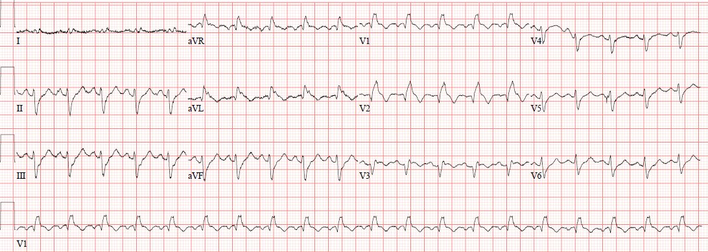
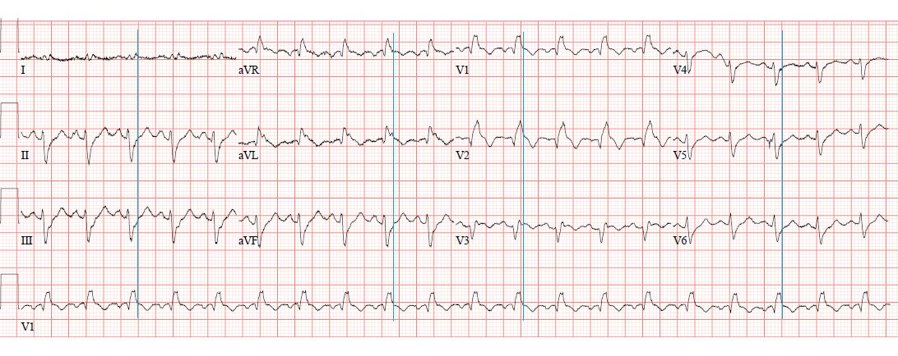
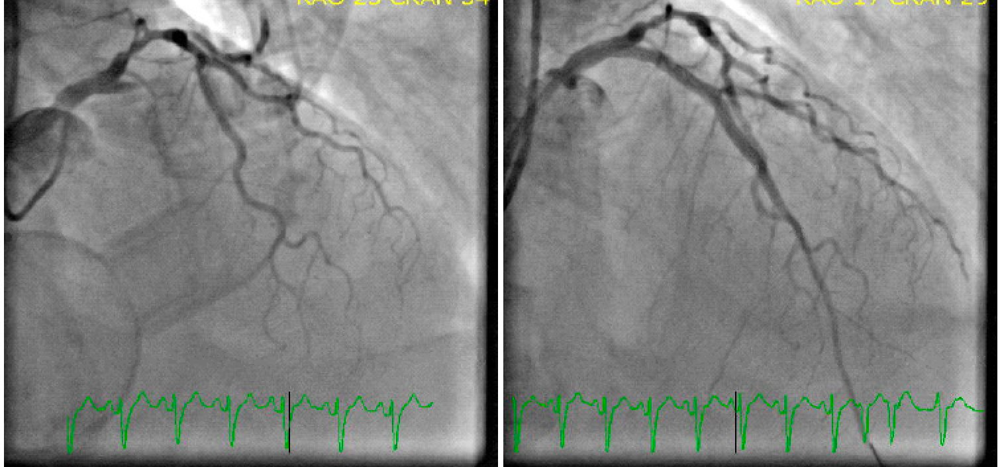
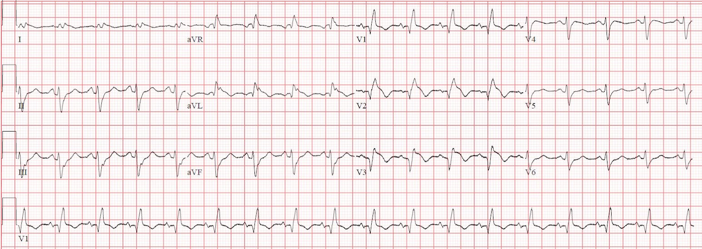
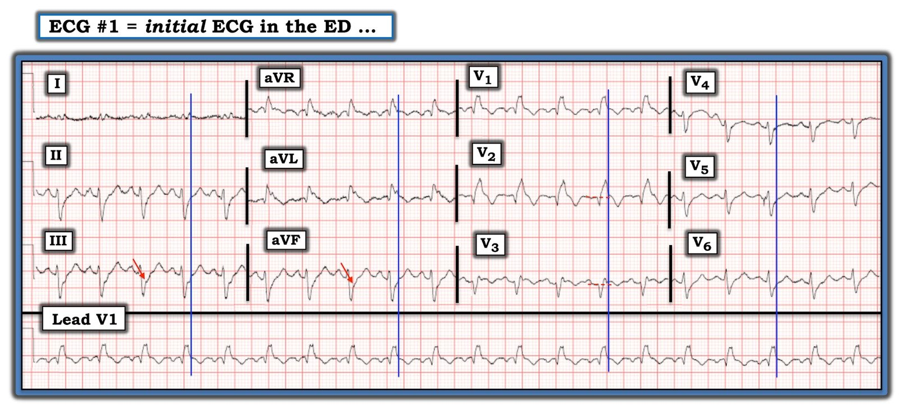

24/08/2020 — Một phụ nữ 60 mấy tuổi đau ngực 6 giờ, khó thở, nhịp tim nhanh và giảm oxy máu
Bản dịch tiếng Việt của bài "A woman in her 60s with 6 hours of chest pain, dyspnea, tachycardia, and hypoxemia" – Dr. Smith’s ECG Blog. Giữ nguyên toàn bộ 7 hình ảnh và 2 video của bản gốc.
Ca bệnh do một tác giả ẩn danh gửi và viết, Meyers và Smith biên tập
Một phụ nữ 60 mấy tuổi đến viện vì cảm giác đau âm ỉ ở ngực làm bà thức giấc sáu giờ trước khi đến, kèm khó thở.
Dấu hiệu sinh tồn khi đến khoa cấp cứu (ED):
Tần số thở (RR) 26
Huyết áp (BP) 141/102
Tần số tim (HR) 120
Độ bão hòa oxy (SpO2) 91
Không có điện tâm đồ cũ nào. Đây là điện tâm đồ đầu tiên được ghi (trong khi bệnh nhân vẫn đang đau ngực và khó thở):


Chỉ cần liếc qua là thấy rõ RBBB và LAFB, một sự phối hợp thường có thể biểu hiện tắc LAD cấp trong bối cảnh hội chứng vành cấp (ACS) và bệnh nhân nặng, ngay cả khi không có độ lệch đoạn ST rõ ràng.
Ghi chú bên lề của Meyers:
RCA thường cấp máu cho nút SA và nút AV, trong khi LAD thường cấp máu cho các nhánh bó His. Khi tắc LAD gây thiếu máu cục bộ các nhánh bó His, thứ tự rối loạn chức năng phân nhánh cấp thường gặp nhất là: blốc nhánh phải, blốc phân nhánh trái trước (left anterior fascicular block), và cuối cùng là blốc phân nhánh trái sau (left posterior fascicular block) (có lẽ vì nhánh phải và phân nhánh trái trước nằm ở vách liên thất phía trước, do LAD cấp máu, trên một đoạn đường dài hơn so với phân nhánh trái sau, vốn phải tách ra ở vị trí gần hơn và chạy dọc vùng bên cao của thất trái). Vì vậy, một số ca tắc LAD nặng nhất biểu hiện bằng RBBB và LAFB cấp, và các dấu hiệu này mang nguy cơ cao nhất bị rung thất cấp, sốc tim cấp và tử vong trong bệnh viện cao nhất, theo nghiên cứu của Widimsky và cs. (tử vong trong bệnh viện là 18,8% đối với nhồi máu cơ tim cấp (AMI) chỉ kèm RBBB mới xuất hiện, chưa nói đến RBBB kèm LAFB). Ngoài ra, RBBB và LAFB làm cho việc nhận biết điểm J và ST chênh lên (STE) khó hơn và dễ bị đọc sai hơn. Khi được tái tưới máu thành công và kịp thời, bệnh nhân có thể hồi phục chức năng của các phân nhánh trước đó bị thiếu máu cục bộ hoặc bị choáng (stunned).
Như Dr. Meyers đã nhấn mạnh trên blog này: “Khi QRS rộng, điểm J sẽ ẩn mình. Vì vậy hãy tìm nó ở bất kỳ chuyển đạo nào, rồi kẻ dóng xuống và chép sang các chuyển đạo khác.” Đây là kết quả, với điểm J được xác định bằng các đường mảnh thẳng đứng màu xanh lam:


Diễn giải: nhịp nhanh xoang kèm RBBB và LAFB. Có lẽ có ST chênh lên rất ít ở V2, V3 và aVL. Chắc chắn không đạt tiêu chuẩn STEMI. Có ST chênh xuống (STD) soi gương rất ít ở các chuyển đạo dưới và V6. Hãy nhớ rằng RBBB thường gặp nhất là có điểm J chênh xuống nhẹ ngược hướng ở V1-V2, vì vậy bất kỳ mức ST chênh lên nào ở các chuyển đạo đó cũng đáng lo ngại (và có lẽ ngay cả đoạn ST đẳng điện, giả sử có R’ rõ rệt như trong ca này). Như đã xác định ở trên, RBBB kèm LAFB là một dấu hiệu đáng ngại của tắc LAD và tử vong.
Bình luận của Smith: có sóng QR ở V1-V3 thay vì rSR’ điển hình. Điều này có giá trị chẩn đoán nhồi máu có sóng Q. Điều này hàm ý hoặc là nhồi máu cơ tim thành trước cũ, hoặc là nhồi máu cơ tim thành trước bán cấp (phù hợp với 6 giờ đau ngực). Nếu là cũ, điện tâm đồ này điển hình cho phình thất trái kèm RBBB. Dù thế nào, sóng Q cho bạn biết ở đây có nhồi máu, dù có thể là cũ. ST chênh lên cũng có thể là cũ. Chính BỆNH SỬ cho bạn biết đây có thể là nhồi máu bán cấp. Tiền sử nhồi máu thành trước trước đây dĩ nhiên sẽ giúp ích, cũng như một điện tâm đồ cũ (trước đây) được ghi sau lần nhồi máu đó. Ở một bệnh nhân đau ngực mới xuất hiện kéo dài 6 giờ, và không có bằng chứng về nhồi máu cơ tim thành trước cũ, ST chênh lên và sóng Q có giá trị chẩn đoán nhồi máu cơ tim bán cấp cần đưa vào phòng thông tim (cath lab).
Nhóm cấp cứu đã nhận ra các dấu hiệu này, và bệnh nhân được chẩn đoán nhiều khả năng là nhồi máu cơ tim do tắc (OMI) gây sốc tim. Khoa tim mạch được mời ngay lập tức xuống khoa cấp cứu để hội chẩn thông tim cấp cứu, nhưng phòng thông tim không được kích hoạt trực tiếp (ở cơ sở này cần có tiêu chuẩn STEMI mới được kích hoạt).
Khoa tim mạch đến đánh giá bệnh nhân, nhưng không đồng ý với cách đọc điện tâm đồ. Họ đề nghị dùng heparin và thông tim vào ngày hôm sau (bất chấp thực tế lúc đó mới 10 giờ sáng).
Trong nỗ lực thuyết phục các bác sĩ tim mạch, nhóm cấp cứu đã làm siêu âm tim tại giường sau đây để tìm rối loạn vận động thành:
Các hình siêu âm tim này cho thấy giảm động nặng hoặc vô động của vách liên thất phía trước và mỏm tim, cũng như một phần thành bên. Thành bên cao ở cả hai mặt cắt là một ví dụ đối chiếu hoàn hảo về cả co bóp lẫn dày lên, cho thấy không có rối loạn vận động thành ở vùng đó (vùng này không do LAD cấp máu mà do LCX). Không có mặt cắt trục ngắn cạnh ức.
Các hình ảnh này đã được đưa cho khoa tim mạch xem, vậy mà các khuyến nghị vẫn không thay đổi.
Bệnh nhân được dùng aspirin và bắt đầu dùng heparin, nhưng đau ngực, khó thở và sốc tim vẫn kéo dài. Vậy mà các bác sĩ tim mạch vẫn từ chối đưa bà vào phòng thông tim cấp cứu (điều này vi phạm ít nhất 2 chỉ định riêng biệt của thông tim cấp cứu trong hướng dẫn ACC/AHA hiện hành: thiếu máu cục bộ đang diễn ra dai dẳng dù đã điều trị nội khoa, và hội chứng vành cấp gây sốc tim).
Ở mốc một giờ kể từ khi đến viện, kết quả troponin T thế hệ hiện hành (contemporary) ban đầu trả về 1,84 ng/mL (đã khá cao, đã nằm trong khoảng troponin đỉnh của STEMI, phần lớn trong khoảng 1-6 ng/mL).
Bình luận của Smith: mức troponin ban đầu rất cao này có giá trị chẩn đoán nhồi máu cơ tim bán cấp, và do đó hoàn toàn phù hợp với điện tâm đồ (có sóng Q). Đến thời điểm này, với đau ngực và mức troponin này, thậm chí không cần bất kỳ điện tâm đồ nào để kích hoạt phòng thông tim. Việc đó là bắt buộc.
Acid lactic là 5,0 mmol/L, và huyết áp bắt đầu giảm trong khi bệnh nhân vẫn còn triệu chứng.
Các bác sĩ tim mạch vẫn từ chối đưa bà vào phòng thông tim cấp cứu.
Ở mốc 2,5 giờ (khoảng 12 giờ trưa), kết quả troponin tiếp theo trả về 2,75 ng/mL. Khoa tim mạch lại được thông báo rằng bệnh nhân đang có thiếu máu cục bộ tiếp diễn, troponin tăng dần và sốc tim nặng lên. Cuối cùng họ đưa bệnh nhân đi thông tim vào khoảng 220 phút sau khi đến viện.
Họ phát hiện tắc hoàn toàn 100% do huyết khối ở LAD đoạn gần với dòng chảy TIMI 0 (hình bên trái), và đã đặt stent (hình bên phải):


Triệu chứng của bệnh nhân dường như không cải thiện sau tái tưới máu, và sốc tim vẫn tiếp diễn.
Troponin đạt đỉnh 34,2 ng/mL vào giờ thứ 72 sau khi đến viện (bình luận của Meyers: nhồi máu cơ tim cực kỳ rộng, đến mức tôi chưa từng ghi nhận bệnh nhân nào sống sót qua đợt nằm viện với mức troponin đỉnh như vậy).
Đây là điện tâm đồ của bà sau khi tái tưới máu LAD:


Kết cục cuối cùng còn đang chờ. Sau 9 ngày, bà vẫn còn đặt nội khí quản và dùng nhiều thuốc vận mạch.
Bàn luận của Meyers:
Đáng tiếc, cách xử trí trong ca này là thực hành phổ biến ở nhiều nơi trên thế giới mà chúng tôi nhận được ca bệnh. Tại sao một bác sĩ can thiệp lại vi phạm nhiều khuyến cáo trong chính hướng dẫn của họ và đứng nhìn lúc 10 giờ sáng trong khi một ca tắc LAD diễn ra ngay trước mắt? Điều gì có thể giải thích vì sao một số người thầy thuốc dường như không quan tâm đến việc tắc LAD có thể được nhận biết bằng thứ khác ngoài tiêu chuẩn STEMI? Hay vì sao rối loạn vận động thành khớp với vùng phân bố đáng lo ngại lại bị phớt lờ? Lời giải thích hợp lý duy nhất là họ đã được dạy rằng đây là thực hành chuẩn. Dưới mô hình STEMI, người thầy thuốc tin vào những điều mà lẽ thường của họ sẽ không bao giờ ủng hộ, và hành động theo những cách mà óc phán đoán của họ lẽ ra sẽ không bao giờ cho phép.
Những điểm cần học:
1. Khi QRS rộng, điểm J sẽ ẩn mình. Hãy tìm nó ở nơi bạn có thể, rồi kẻ dóng xuống và chép sang các chuyển đạo khác.
2. RBBB và LAFB là một dấu hiệu rất đáng ngại của tắc LAD trong bối cảnh bệnh nhân nặng có hội chứng vành cấp. Trong bối cảnh hội chứng vành cấp do LAD, bệnh nhân có RBBB + LAFB bệnh cực kỳ nặng, phần lớn hoặc là sau ngừng tim, hoặc đang trong sốc tim.
Đây là một số ca RBBB + LAFB khác.
3. Ngay cả trong các hướng dẫn đã lỗi thời của thời kỳ STEMI, vẫn có những chỉ định thông tim cấp cứu khi không có tiêu chuẩn STEMI, bao gồm thiếu máu cục bộ đang diễn ra dù đã điều trị nội khoa, hội chứng vành cấp gây sốc tim, và hội chứng vành cấp gây mất ổn định huyết động hoặc mất ổn định điện học.
4. Dùng siêu âm trong hội chứng vành cấp để tìm rối loạn vận động thành (WMA).
Tài liệu tham khảo:
Widimsky PW, Rohác F, Stácek J, và cs. Primary angioplasty in acute myocardial infarction with
right bundle branch block: should new onset right bundle branch block be added to future (tên bài: Nong mạch vành tiên phát trong nhồi máu cơ tim cấp có blốc nhánh phải: có nên đưa blốc nhánh phải mới xuất hiện vào các hướng dẫn tương lai như một chỉ định điều trị tái tưới máu?)
guidelines as an indication for reperfusion therapy? Tạp chí Eur Heart J. 2012;33(1):86–95.
https://pubmed.ncbi.nlm.nih.gov/21890488/ (bài báo trên PubMed)

===================================
BÌNH LUẬN CỦA TÔI, bởi KEN GRAUER, MD (24/8/2020):
===================================
Sir William Osler (1849-1919) thường được xem là Cha đẻ của Y học Hiện đại. Câu nói nổi tiếng nhất của ông là — “Hãy lắng nghe bệnh nhân; họ đang nói cho bạn chẩn đoán”. Ca hôm nay minh họa một nguyên tắc tương tự mà tôi đã nhiều lần thấy đúng trong suốt những thập kỷ nghiên cứu điện tâm đồ, đó là — Hãy lắng nghe bệnh nhân, và họ sẽ giúp bạn đối chiếu những gì đang diễn ra với điện tâm đồ của họ.
- Vì tác giả ẩn danh và Meyers đã trình bày chi tiết cách đọc ca này một cách xuất sắc — tôi sẽ giới hạn bình luận của mình ở những suy nghĩ sau.


Dr. Meyers, Dr. Smith và tôi đều được xem điện tâm đồ ban đầu của ca hôm nay trước khi biết bệnh sử. Để rõ ràng — tôi đã in lại bản ghi này ở Hình 1.
- Mắt tôi ban đầu bị “thu hút” bởi chỗ thay đổi độ dốc (các mũi tên ĐỎ ở chuyển đạo III và aVF) — mà thoạt nhìn tôi nghĩ là điểm nối giữa phần cuối sóng S và phần đầu đoạn ST. NẾU đúng như vậy — thì điều đó có nghĩa là có ST chênh xuống soi gương đáng kể, mà cùng với ST chênh lên ở nơi khác sẽ chỉ ra tắc mạch vành cấp.
- Dr. Smith đã thận trọng một cách hợp lý, “Tôi không thấy cái này nhất thiết là cấp. Không có nhiều ST chênh lên (thậm chí không phải ST chênh lên dốc xuống) — và sóng T cũng âm. Trông rất giống phình thất trái kèm RBBB ở một bệnh nhân nặng có nhịp nhanh xoang. Tôi tò mò muốn biết bệnh cảnh và kết cục.” Theo bình luận của Dr. Smith (ở trên) — có sóng Q ở các chuyển đạo V1, V2, V3, cho thấy nhồi máu vào một thời điểm nào đó (do đó có thể phù hợp với phình thất trái khi ST chênh lên ở mức vừa phải).
- Khi tôi xem lại lần nữa (và vẽ cùng những đường ngang màu XANH LAM mà tác giả ẩn danh và Meyers trình bày ở trên) — thì rõ ràng chỗ thay đổi độ dốc mà tôi đánh dấu bằng mũi tên ĐỎ ở chuyển đạo III và aVF hoàn toàn không phải là ST chênh xuống — mà thay vào đó là phần tận cùng của phức bộ QRS bị kéo dài.
- Dù vậy — lần “xem lại” bản ghi này vẫn gợi ý cho tôi rằng hình dạng của sóng ST-T ở chuyển đạo aVL, và V1, V2, V3 là không bình thường. Tôi nghĩ hình dạng này gợi ý ít nhất có ST chênh lên nhẹ ở mỗi chuyển đạo này (nhiều hơn một chút ở V3). NHẬN ĐỊNH của tôi (mà tôi đã viết trả lời) — BỆNH SỬ sẽ là tất cả, vì NẾU bệnh nhân này có đau ngực mới xuất hiện, nghe giống nguồn gốc tim (khi không có bản ghi cũ để so sánh) — thì chỉ từ bản ghi này tôi sẽ không chắc chắn được điều gì là mới so với điều gì là cũ.
- ĐIỂM THEN CHỐT (PEARL) #1 — Như tác giả ẩn danh và Meyers đã nêu, thường có điểm J chênh xuống nhẹ ngược hướng ở chuyển đạo V1, V2 khi có RBBB. Hãy xem lại thật kỹ sóng ST-T ở chuyển đạo V1 và V2 trong Hình 1. Đây không phải là hình dạng bình thường của sóng ST-T trong RBBB đơn thuần — vì đoạn ST dạng vòm bất thường “ôm sát” đường nền, trong khi bình thường phải có ít nhất ST chênh xuống nhẹ.
- ĐIỂM THEN CHỐT (PEARL) #2 — Như Dr. Smith đã ngụ ý (Xem ở trên), nhịp nhanh xoang có thể làm nổi bật ST chênh lên vốn không nhất thiết là cấp. Đó là lý do ông gợi ý (tùy thuộc vào bệnh sử) — rằng việc không có độ lệch đoạn ST cấp trên điện tâm đồ #1 có thể phản ánh “phình thất trái kèm RBBB ở một bệnh nhân nặng có nhịp nhanh xoang”.
Quay lại câu nói MẤU CHỐT của Dr. Osler, “Hãy lắng nghe bệnh nhân; họ đang nói cho bạn chẩn đoán”:
- Bệnh sử trong ca này là một phụ nữ 60 mấy tuổi bị đánh thức khỏi giấc ngủ 6 giờ trước thời điểm ghi điện tâm đồ #1. Không có bản ghi cũ nào. Bệnh nhân khó thở cấp, thở nhanh, đang đau ngực vào thời điểm ghi điện tâm đồ ban đầu. Chẳng phải bệnh nhân này về cơ bản đang nói với chúng ta rằng, “Tôi đang bị sốc tim do OMI cấp kèm RBBB/LAHB?”
- Tiêu chuẩn milimét cho STEMI cấp rõ ràng không được thỏa mãn trên điện tâm đồ #1. Chẳng phải bệnh nhân này đang nói với chúng ta? — “Lý do tôi không còn ST chênh lên là vì STEMI diện rộng của tôi đã tiến triển rồi — bởi nó bắt đầu từ 6 giờ trước! Hãy nhìn các đoạn ST dạng vòm (coving) của tôi ở chuyển đạo aVL và V3, mỗi chuyển đạo giờ đều cho thấy sóng T tái tưới máu (T đảo ngược). Đây không phải là điều người ta thấy ở các chuyển đạo này trong RBBB đơn thuần.” Lý do có ST dạng vòm bất thường mà không có ST chênh lên rõ rệt ở chuyển đạo V1,V2 là vì các đoạn ST này đang trên đà đi xuống …
- Siêu âm tim tại giường đã xác nhận các kết luận trên — cũng như troponin tăng và sốc tim nặng dần. Cuối cùng (gần 4 giờ sau khi đến viện) — bệnh nhân mới được đưa đi thông tim.
- Bài học Đau đớn cần rút ra (đặc biệt là cho nhóm tim mạch trong ca này) — Nhìn điện tâm đồ #1 trong ca hôm nay mà không biết bối cảnh lâm sàng thì không thể cho bạn biết chuyện gì đang xảy ra với bệnh nhân. Điều này thường đúng với bất kỳ điện tâm đồ đơn lẻ nào. Nhưng đối chiếu lâm sàng với bệnh sử và khám thực thể của bệnh nhân này cho chúng ta thấy rõ rằng chúng ta buộc phải giả định nhồi máu OMI cấp diện rộng bắt đầu từ 6 giờ trước là nguyên nhân gây sốc tim nặng dần của bệnh nhân này cho đến khi chứng minh được điều ngược lại. Lẽ ra phải thông tim cho bệnh nhân này sớm hơn nhiều.